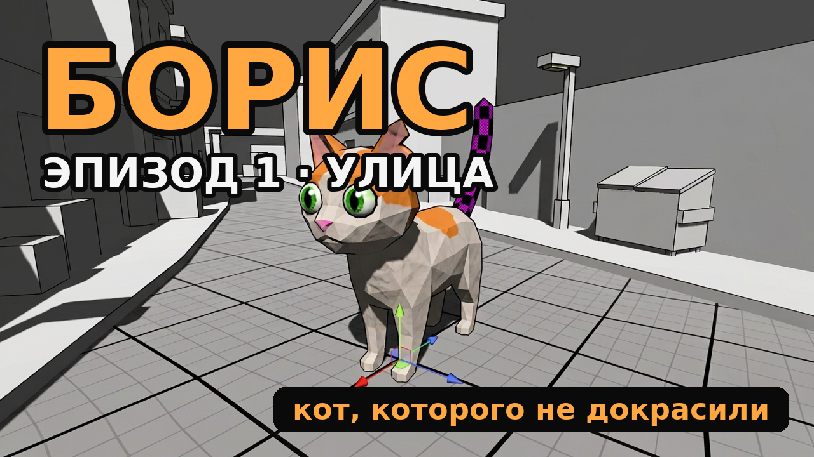
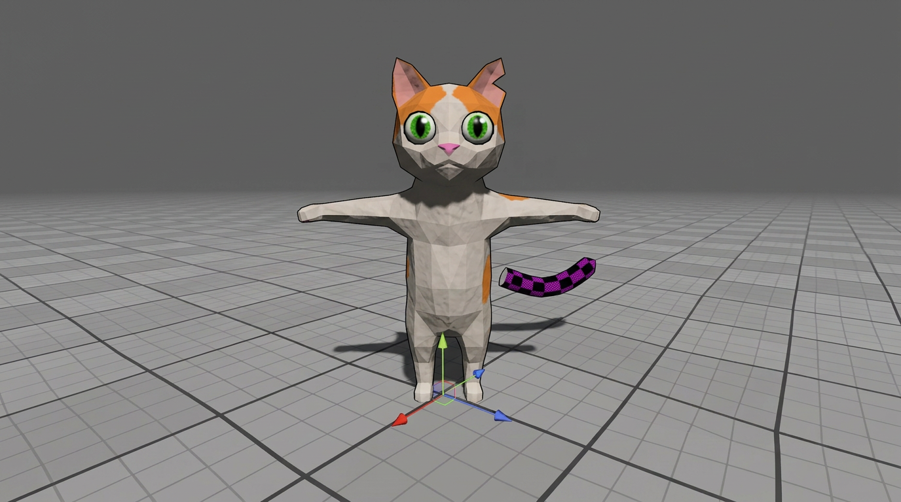

Борис начинает жизнь на улице: триста двадцать полигонов, непрокрашенный хвост и большая мечта о сосиске. Впереди — мусорные баки, коробка-недвижимость и тёплое окно с человеком.
В финале Борис встаёт в Т-позу и ждёт вашего вердикта: что он получит в следующем эпизоде?

